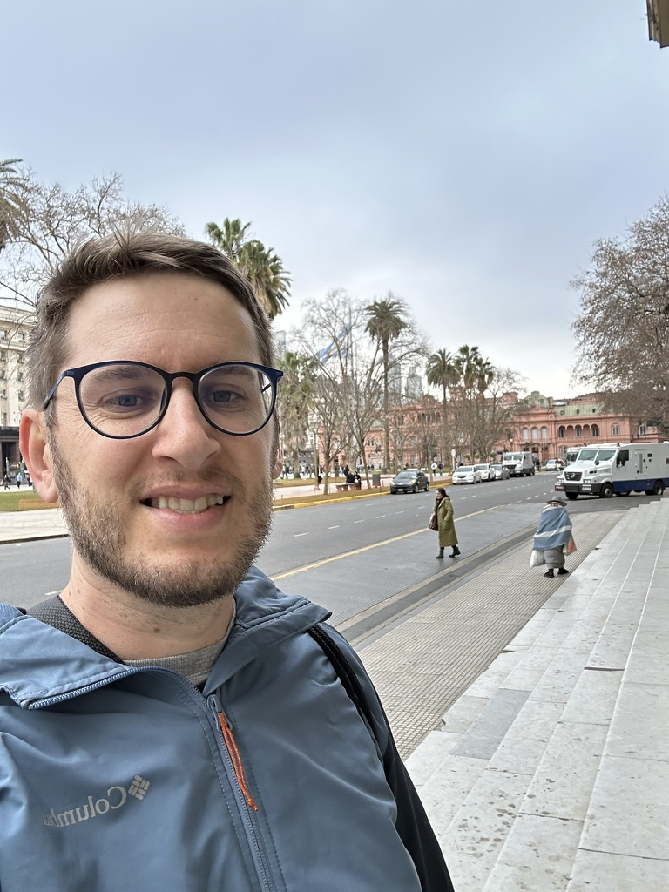
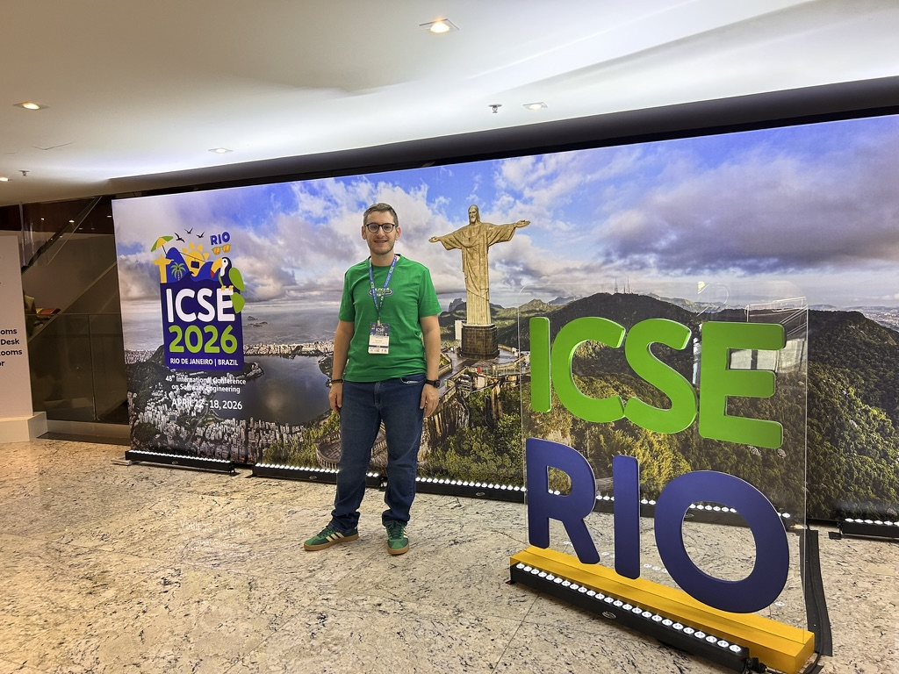

Design Thinking in Software Development
How Design Thinking practices can be integrated into software processes to foster innovation, collaboration, and shared understanding within development teams.
Software Engineering Researcher
Investigating the human and creative side of software development — Design Thinking, product discovery, user experience, and Artificial Intelligence in Computer Science education.

 Ph.D. in Computer Science · PUCRS
Ph.D. in Computer Science · PUCRSI am a professor and researcher with more than a decade of experience in Computer Science. My work investigates the human, collaborative, and creative dimensions of software development — with an emphasis on Design Thinking, product discovery, user experience, and Artificial Intelligence applied to Computer Science education.

Passionate about fostering innovation and collaboration, I bridge software engineering research and practice: bringing Design Thinking, discovery, and human-centered methods into how teams build software, and studying how these approaches change the way people learn and work.
I hold a Ph.D. with international research experience, including a research period in Germany. I have presented my work at conferences in Brazil, Argentina, Germany, Canada, and Finland.
Over the past decade I have coordinated more than seven research projects and trained professionals for both industry and academia. I also actively contribute to the organization of national and international conferences.
Reviewer and distinguished-service recognitions from the Brazilian Computer Society and the software engineering research community.
XXI Simpósio Brasileiro de Sistemas Colaborativos (SBSC 2026), Sociedade Brasileira de Computação.
Journal of Software Engineering Research and Development (JSERD).
XX Simpósio Brasileiro de Sistemas Colaborativos (SBSC 2025), Sociedade Brasileira de Computação.
Journal of Software Engineering Research and Development (JSERD).
Brazilian Symposium on Software Quality (SBQS), Sociedade Brasileira de Computação.
Simpósio Brasileiro de Educação em Computação, Sociedade Brasileira de Computação.
Brazilian Symposium on Software Quality (SBQS), Sociedade Brasileira de Computação.
Brazilian Symposium on Software Quality (SBQS), Sociedade Brasileira de Computação.
How human-centered and creative practices shape the way software is designed, built, and taught.
How Design Thinking practices can be integrated into software processes to foster innovation, collaboration, and shared understanding within development teams.
Techniques that help teams decide what to build — discovery practices, hypothesis validation, and the bridge between business intent and software requirements.
How UX thinking is adopted (or resisted) by software teams, and the human aspects — motivation, communication, empathy — that influence software quality.
Using Artificial Intelligence to support and personalize learning in Computer Science, and studying its effects on how students learn to build software.
Applying Computer Vision to physical agile artifacts (boards, notes, ceremonies) to generate feedback and increase transparency and efficiency in Agile teams.
Collaborative and social computing applied to software development, connected to my role in the SBC Special Committee on Collaborative Systems (CESC).
A laboratory dedicated to fostering creativity for software development, connecting students, researchers, and practitioners around discovery and Design Thinking.
Recent publications on collaborative systems, Design Thinking, human aspects of software engineering, and Computer Science education. For the complete and up-to-date list, please see my Lattes CV and Google Scholar profile.
Simpósio Brasileiro de Engenharia de Software (SBES), São Paulo, Brazil.
Parizi, R. B.; Campos, L. A.; Fonseca, A. P.; Kleinpaul, E.
Qualis CC A3
Simpósio Brasileiro de Engenharia de Software (SBES), São Paulo, Brazil.
Bordin, A. S.; Garcia, L. C. M.; Parizi, R. B.
Qualis CC A3
Best Paper
Simpósio Brasileiro de Sistemas Colaborativos (SBSC), Porto Alegre, Brazil.
Kleinpaul, E.; Pires, A.; Campos, L.; Iglesias, I. L.; Parizi, R. B.
Qualis CC A4
Simpósio Brasileiro de Sistemas Colaborativos (SBSC), Porto Alegre, Brazil.
Silva, L.; Fagundes, N.; Silveira, R.; Flores, T.; Parizi, R. B.
Qualis CC A4
Simpósio Brasileiro de Sistemas Colaborativos (SBSC), Brazil.
Parizi, Rafael
Qualis CC A4
Simpósio Brasileiro de Sistemas Colaborativos (SBSC), Brazil.
Pires, A.; Kleinpaul, E.; Parizi, R.
Qualis CC A4
Simpósio Brasileiro de Sistemas Colaborativos (SBSC), Brazil.
Gouvêa, M. T.; Dias, A. F. S.; Parizi, R.; Motta, C.
Qualis CC A4
Distinguished Paper
Simpósio Brasileiro de Sistemas Colaborativos (SBSC), Brazil.
Kleinpaul, E.; Pires, A.; Machado, L.; Parizi, R.
Qualis CC A4
Simpósio Brasileiro de Engenharia de Software (SBES), Recife, Brazil.
Kleinpaul, E.; Parizi, R. B.
Qualis CC A3
Brazilian Software Quality Symposium (SBQS), São José dos Campos, Brazil.
Pires, A.; Kleinpaul, E.; Campos, L.; Parizi, R. B.
Qualis CC A3
Workshop on Requirements Engineering (WER), Buenos Aires, Argentina.
Dornelles, P. L.; Parizi, R.
Escola Regional de Engenharia de Software (ERES), Brazil.
Soares, R.; Messa, L.; Kleinpaul, E.; Parizi, R.
Escola Regional de Engenharia de Software (ERES), Brazil.
Nicácio, V.; Kleinpaul, E.; Soares, R.; Parizi, R.; Sarkis, L.
Simpósio Brasileiro de Engenharia de Software (SBES), Brazil.
Parizi, R.; Hanauer, L.; Marczak, S.; Conte, T.
Qualis CC A3
Simpósio Brasileiro de Engenharia de Software (SBES), Brazil.
Abich, D.; Parizi, R.; Marczak, S.
Qualis CC A3
Simpósio Brasileiro de Educação em Computação (EduComp), Brazil.
Dornelles, P. L.; Dantas, J.; Parizi, R.
Anais Estendidos do Simpósio Brasileiro de Sistemas Colaborativos (SBSC), Brazil.
Abich, D.; Cavalheiro, B.; Parizi, R.
Anais Estendidos do Simpósio Brasileiro de Sistemas Colaborativos (SBSC), Brazil.
Correa, C. M.; Parizi, R. B.
2026 · Journal article
Journal of the Brazilian Computer Society (JBCS), Vol. 32, No. 1.
Kleinpaul, E.; Pires, A.; Campos, L.; Parizi, R.
2025 · Journal article
Accepted for publication in the SOL journal.
Parizi, R. B.
2024 · Book chapter
XII Jornada de Atualização em Informática na Educação (JAI), SBC.
Parizi, R. B.; Gouvea, M. T. A.; Dias, A. F. S.
Roles and contributions to the research community, program committees, and my institution.
Brazilian Computer Society (SBC)
Leading the national research community on collaborative systems and CSCW applied to software development. Previously Co-Coordinator.
National and international venues
Organizing-committee member for 8+ conferences and reviewer for software engineering and computing education venues, with best-paper and outstanding-reviewer recognitions.
Germany (research period)
Work presented at conferences in Brazil, Argentina, Germany, Canada, and Finland.
Federal Institute Farroupilha (IFFar)
Led the undergraduate program: curriculum, faculty coordination, and student support.
Federal Institute Farroupilha (IFFar)
Served on the highest deliberative body of the institution.
Undergraduate and technical levels
40+ students mentored in Information Technology; 7+ research projects coordinated as principal investigator over the past decade.
Teaching Computer Science since 2012, with more than 10,000 hours in the classroom and a focus on software engineering, discovery, and human-centered design.
Undergraduate — Information Systems, IFFar
Software processes, requirements, agile methods, and quality.
Undergraduate and extension courses
200+ hours facilitating Design Thinking workshops for students and practitioners.
Undergraduate — Information Systems, IFFar
Usability, interaction design, and evaluation methods.
2012 – Present
Supervising students on Design Thinking, AI in education, and Computer Vision for agile projects.
Information Systems, IFFar
Advising software projects that connect research questions with real problems.
Ongoing
Bringing computing and design activities to the wider community around São Borja.
Open to research collaborations, student supervision, and invited talks. Feel free to reach out.
Federal Institute Farroupilha — São Borja Campus